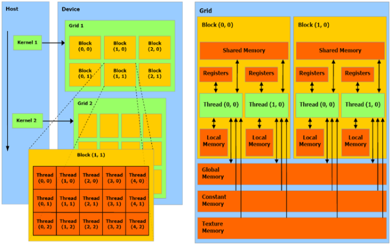

The CUDA programming model and pipeline.
In order to use an Nvidia GPU to run parallelized code, it’s vital to understand how a parallelized algorithm differs from serial algorithms you’re familiar with. For the simplest example of how to divide up the work, let’s imagine a regular for loop:
We can see that this code will run in O(N) time.
Now let’s look at how this algorithm might be implemented in CUDA C pseudocode.
When the above code is executed on the GPU, every thread on the card will execute the method. Each thread knows its own threadId. Then if threadId is larger than N, the executing thread simply exits without printing anything. This threadId variable can also be used in creative ways to address memory in an array. The above code would run in O(N/threadCount) where the variable threadCount is the number of threads that any Nvidia GPU model has. Threads are organized into groups called blocks, and blocks are part of groups called grids. This logical organization helps a thread calculate its threadId when the workload is greater than the threadCount on the GPU.
CUDA ready GPUs are complete compute units. They contain the processors, as well as a memory space separate from the host memory space. As such, data to process is copied from host to GPU. And results must be copied back from the GPU memory, back to the host memory following an operation. The graphic above shows the CUDA threading model and memory model.